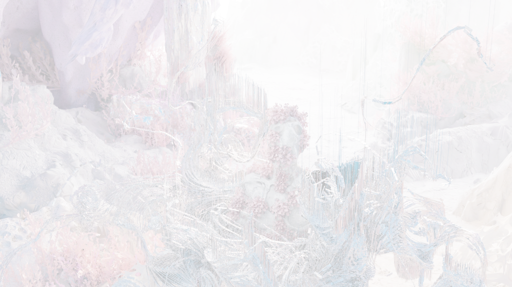
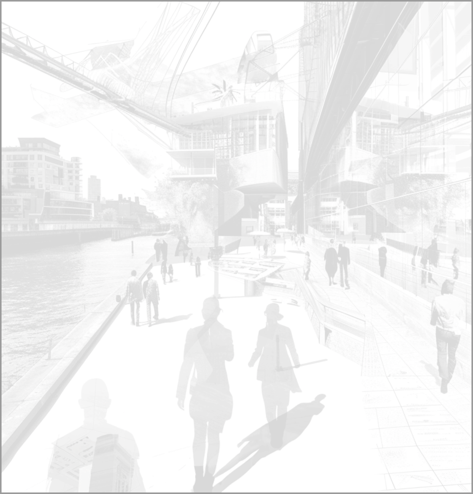
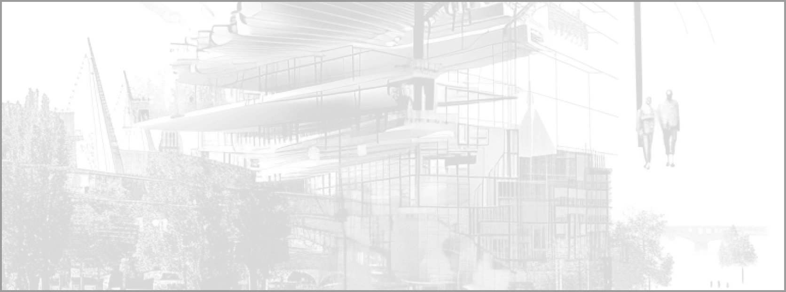
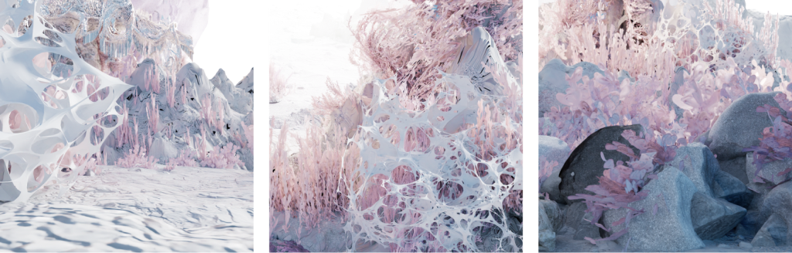
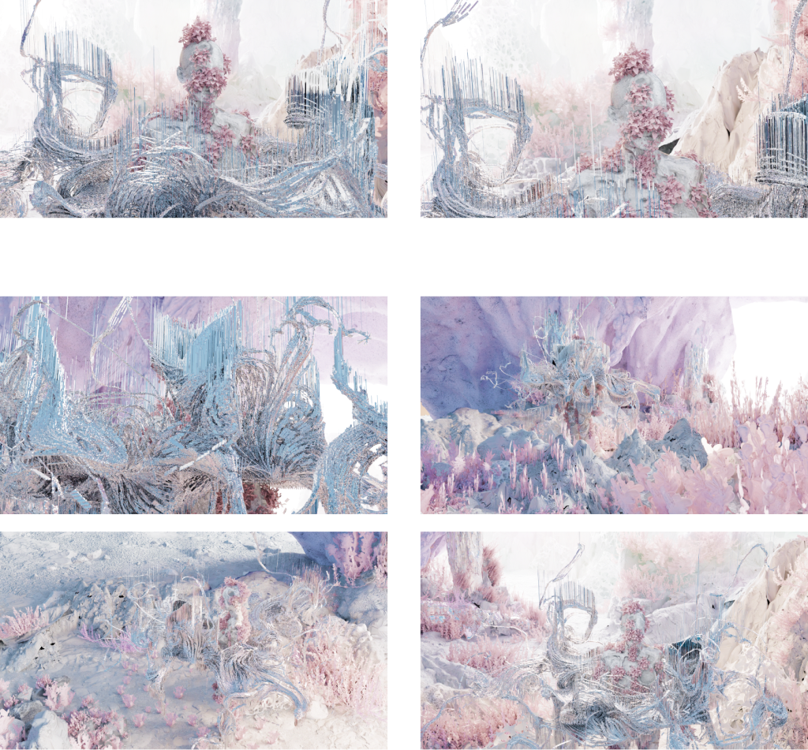
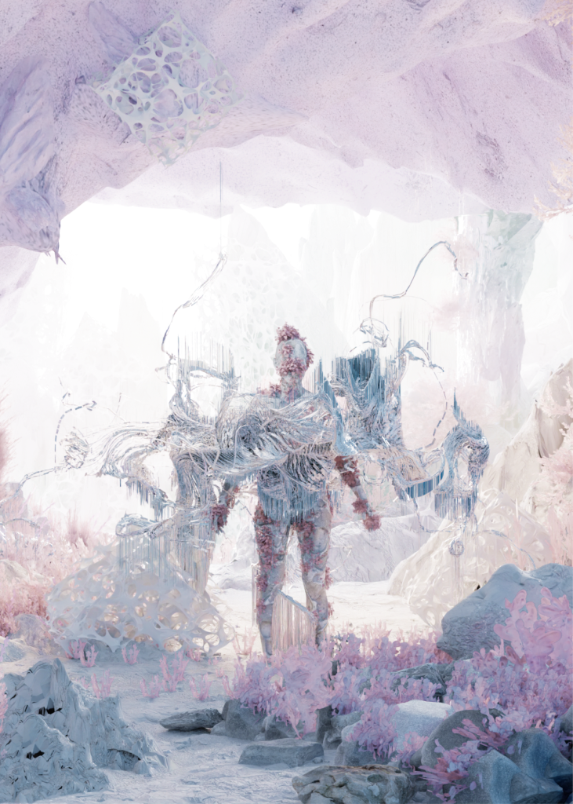

MIMESIS
DIGITAL-CLOTH DESIGN

身体被植物覆盖，以呈现生命的气息。
整体服饰设计也与环境相呼应，以白色、灰色和粉色为主色调，呈现出神圣感与梦幻感。
这个环境完全构建在虚拟空间中，因此在设计中，我选择了地球表面上很少见的事物和抽象的材料，如抽象珊瑚、珊瑚礁、水生植物等，来呈现环境的仿生和梦幻感。在今天这个科技飞速发展的时代，我们被机械包围，生活在数字之中——由于技术的发展，人类的生活环境逐渐变得机械化和压抑。未来的生活环境会是这样吗？我希望通过塑造一个无机的、富有生命感的环境，反思当前机械化社会的刻板性。
DESIGN




